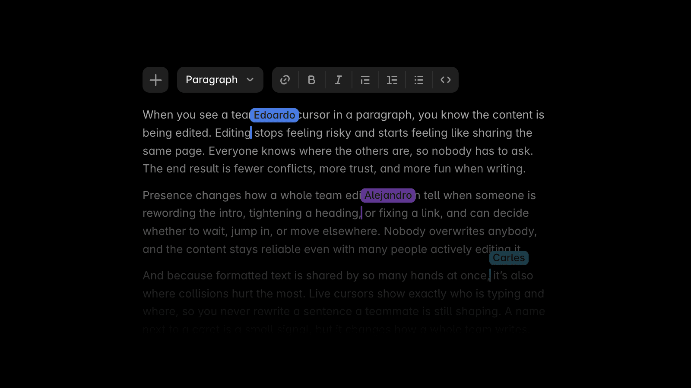
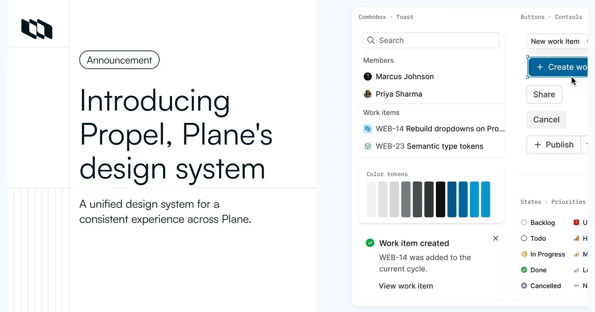
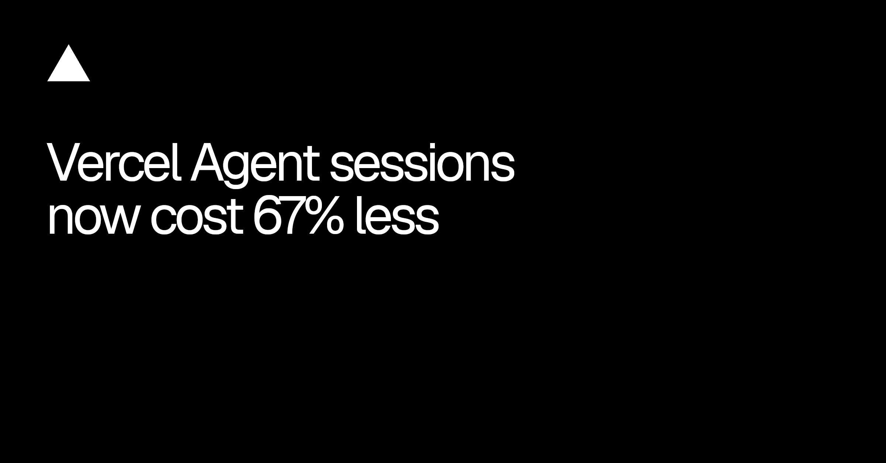
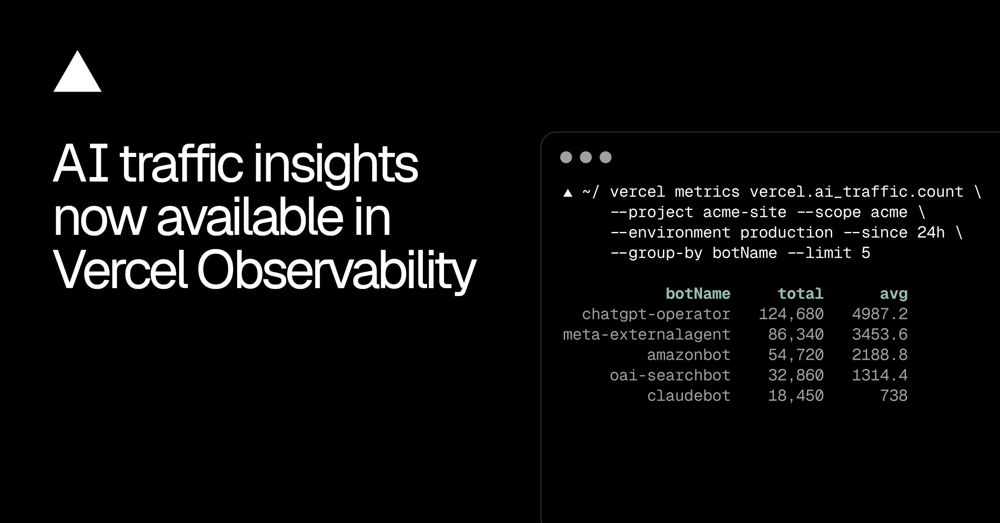
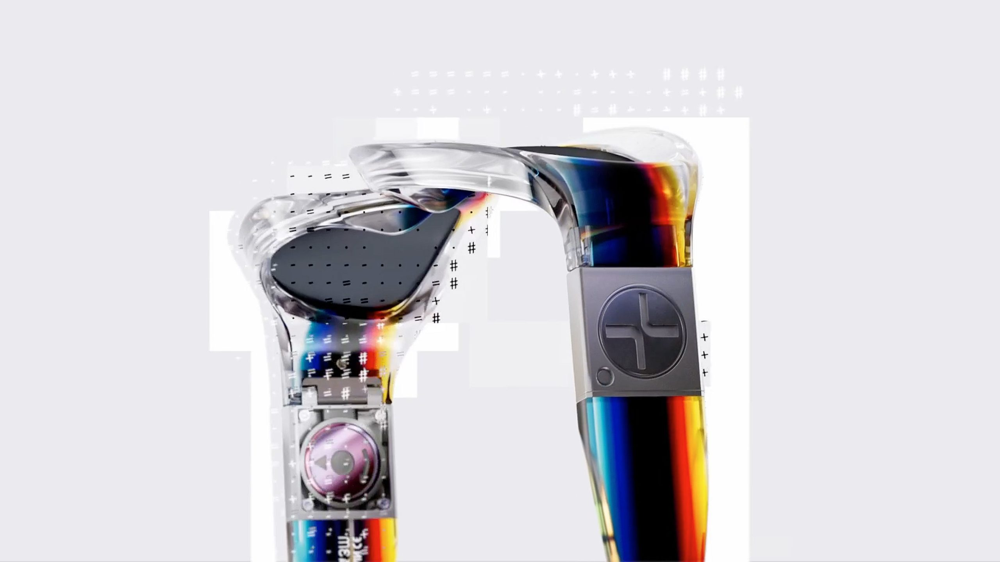

这一轮更新终于不再比谁更会生成，而是开始处理生成之后那堆麻烦事：版本怎么退、同事怎么一起改、钱到底花在哪、东西上线后有没有真的被 AI 读走。Figma 给生成式插件补版本历史，Framer 把多人光标塞进 CMS，Canva 则直接接收 Claude 产出的 HTML，都是在争夺“草稿之后”的控制权。
这比再加一个模型选择器重要得多。生成按钮谁都能做，真正费团队时间的是返工、冲突、计费、权限和无法继续编辑的半成品。今天这批更新里，能让结果继续被人接管的留下；只会把 demo 做得更热闹的，先放一边。
10 月 27 日的更新很小，却补在痛点上：编辑 generative plugin 或 shader 会自动创建新版本，旧版本可以回看和恢复；每次更新还有 agent 生成的说明，并标出当前发布的是哪一版。本周滚动开放。
这类工具以前最像一次性烟花——改坏了只能凭记忆重做，发布版和试验版也容易混在一起。现在它至少开始像一个正经制作工具。还缺的也很明确：版本之间能不能看参数差异、谁改的、恢复会不会影响已经被引用的实例。没看到这些之前，先别把它当 Git。
Canva 把 Design Engine 和 Visual Suite 接进 Claude Design：Claude 里的草稿可以转成结构化、可编辑的 Canva 设计。更有意思的是 HTML 导入——landing page、widget 和交互 artifact 进 Canva 后，可以拖拽改颜色、移动元素、调整布局，再嵌进演示、表单或网站。
这不是“Claude 又多了个导出格式”，而是在抢最后一公里。过去 AI 交付 HTML，设计师只能继续改代码，或者截图重搭；现在 Canva 想把它重新拆回可视对象。官方还没把支持到哪一层讲透，复杂 CSS、脚本状态、响应式断点和组件语义能保留多少，先不替它乐观。真要试，别拿静态 hero 糊弄自己，直接丢一页带表单、hover 和移动端断点的页面进去。

Framer 给 CMS 和 Canvas 的 formatted text 加了多人光标，谁正在改哪一段能直接看见；Canvas 光标也收紧了尺寸和对比度。顺手一起上的还有 CMS 富文本里的 Vimeo、网页嵌入，以及 reference / multi-reference 筛选。
这次没有大功能发布会，倒像是在收拾真正影响团队协作的碎玻璃。内容团队最怕两个人同时改 hero 文案，最后谁也不知道哪版被覆盖。现在至少能看见人，但冲突怎么合并、历史怎么回退、临时条目怎么保留，还得继续看。多人光标只是“有人在这里”，不是版本管理。
MakeAFont 结束 Beta：第一套字体可以免费创建、预览和编辑，不加水印；要下载，最低买 €1.99 的 Mini token pack。它也把字符映射预览、图片转字体、手写表格导入和手机端编辑重新梳了一遍，Good 质量现在出 4K 字符表，价格仍是 400 tokens。
我喜欢它把收费点讲得很明白：先看清楚结果，再为下载付钱。AI 字体工具最容易把“生成了几张字母图”包装成可用字体，真正该验的是标点、字距、浏览器里的 TTF / WOFF2、重复字形和小字号。还没实测，先不夸生成质量；但拿它做一次活动标题字，比一上来买整套订阅合理得多。

Plane 过去同时跑着三套组件库，菜单、日期和弹窗在不同页面里一点点长歪。Propel 把 Web、桌面端、公开视图和 self-hosted 管理后台收回同一套组件；浅色、深色和两套高对比主题一起支持，Cloud 已上线，self-hosted 从 4.0.0 开始使用。
文章里最好的一段不是 token，也不是组件数量，而是他们公开写了两个还没修完的问题：Create dialog 不能按 Escape 关闭，Members 表头滚动时不会固定。设计系统发布最怕只展示漂亮组件墙，Plane 至少把迁移后的毛边也摆出来。对我们更有用的动作，是盘一次同名控件在不同业务页里到底有几套，而不是先建一个新的 Library。

Vercel 说 Dashboard 和 Slack 里的 Agent session 平均成本下降 67%。原因不是降价，而是增量管理上下文、提高 prompt cache 复用，再用 workflow-oriented CLI skills 少走弯路。费率仍是模型推理成本，加每百万 tokens 0.25 美元的 Vercel Agent fee。
这条要把标题和账单分开看：一次任务便宜了，不代表单价便宜了。设计工程团队真正该记的是，清楚的 workflow、稳定的上下文边界和可复用缓存，本身就是成本设计。下次比较 agent，不要只记“做成没做成”，把总 tokens、cache hit、重试次数和人工接管点一起记下来。

新面板会列出 verified AI bot 请求、被爬最多的页面、assistant retrieval、Markdown 请求和错误页面；同一批指标也能用 vercel metrics 查，不过 CLI 查询需要 Observability Plus。
SEO 看的是人怎么搜，AI traffic 看的是机器究竟拿走了哪一页。产品文档、价格页和帮助中心以后不能只在浏览器里“看起来正常”，还要确认 Markdown 版本有没有丢表格、组件说明和更新时间。先别急着给每个 bot 做 dashboard，找出被抓最多的十页，逐页核对机器读到的内容，比画一张漂亮曲线有用。

视频：Framerate 原片播放器https://framerate.tv/embed/EJo43xOi?primary_color=%2523ffffff&track_color=%2523ffffff&theme=minimal｜制作：Spot Studiohttps://spot-studio.net/
这是那种很容易被做成“彩虹渐变 + glitch 贴纸”的联名，Spot Studio 没停在表面。镜片、铰链、电池和结构件先被当成工业对象认真建模，再让 Felipe Pantone 的色带、坐标、扫描线和像素碎裂逐步接管画面。眼镜一直是主角，艺术语言只是改变它被看见的方式。
镜头节奏也很克制：先给材质和结构一个能看清的停顿，再用快速拆解、局部放大和故障跳切把能量推起来。产品片可以学它的顺序——先证明物件值得看，再让品牌风格侵入；一上来就满屏效果，观众只记得特效包。网页实现不必复刻整支 3D，可抽成三层：高质量产品 turntable、少量 shader 扭曲、跟随滚动的技术标注。这样既保留味道，也不会把首屏做成显卡测试。
EJo43xOi。核验说明：Figma、Framer、Canva、Plane、MakeAFont、Vercel 与 Stash 官方页面于 2026-10-28 回读。正文配图均下载检查，原始宽度为 1200–2560px；Figma 候选图虽有 1600px，但只含品牌字样，不能帮助判断功能，已主动省略。Spot Studio 主卡在 Markdown 与公众号 HTML 保留静态图，飞书视频小节只使用落地页 / 播放器 Preview View，不重复插封面。